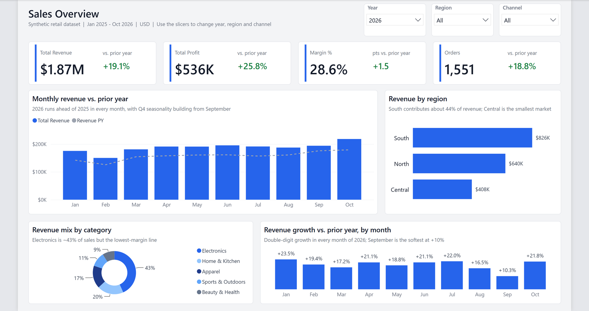
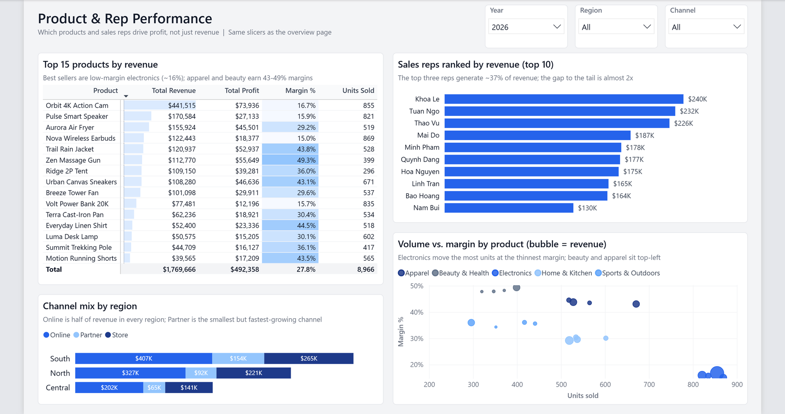
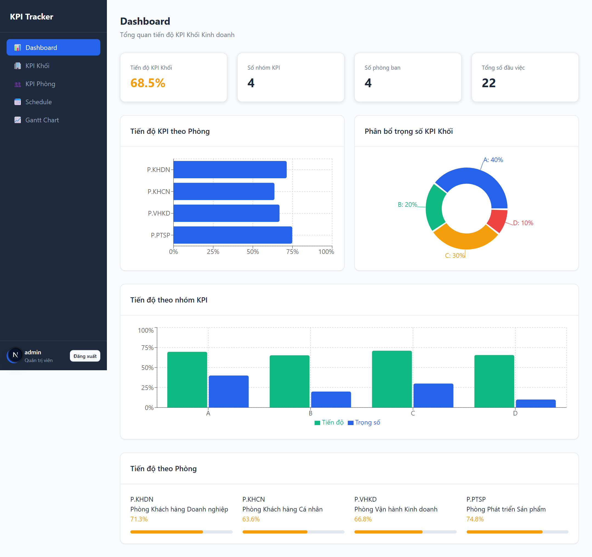
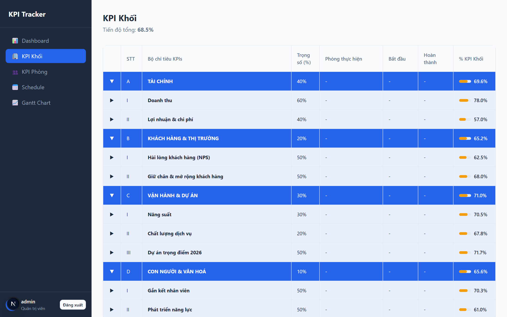
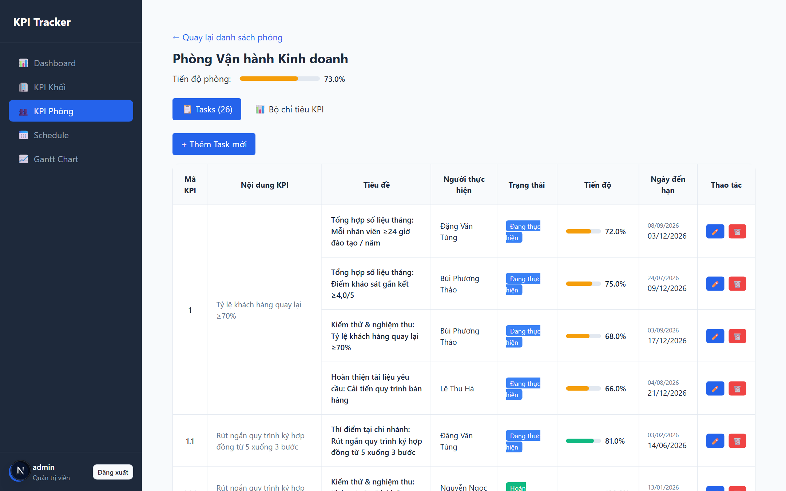
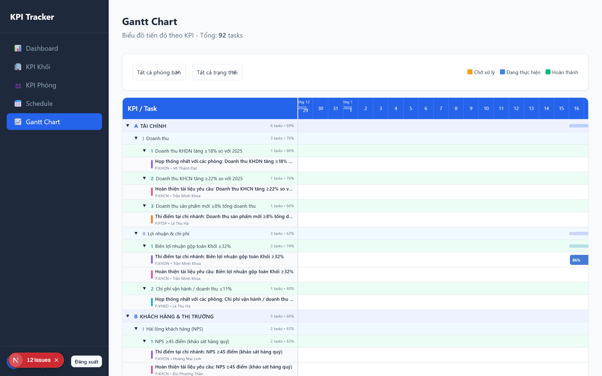
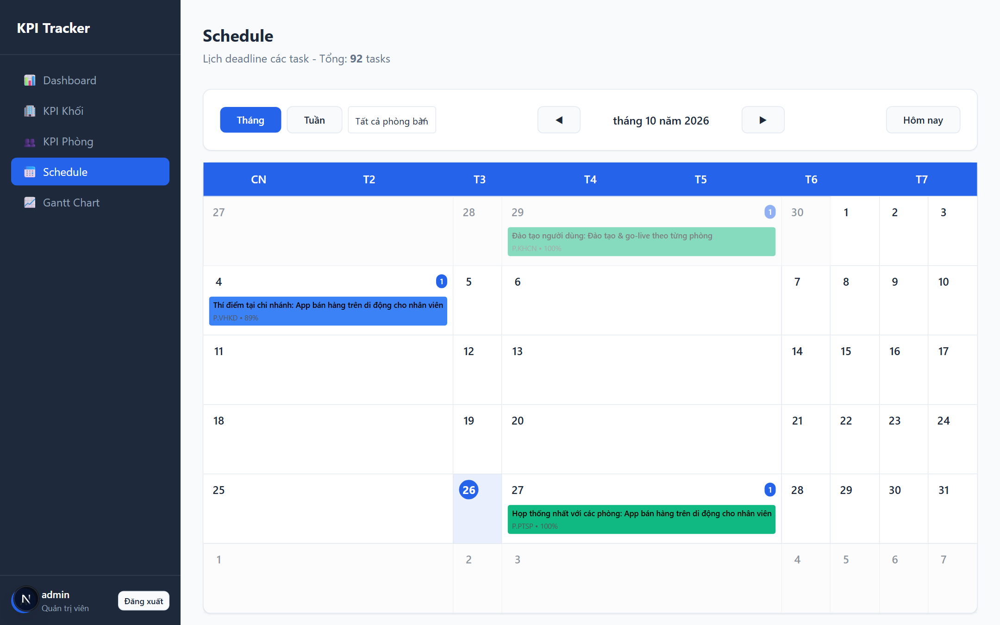

I turn messy operational data into dashboards managers actually use.Biến dữ liệu vận hành rối rắm thành dashboard mà ban lãnh đạo thực sự dùng.
Power BI developer and data analyst. For several years I have been the in-house data person for a management team: weekly and monthly reports, KPI reviews, and the automation that gets those reports out before anyone arrives at the office. I also build the lightweight web tools around the data.Chuyên viên phân tích dữ liệu và Power BI. Nhiều năm làm "người giữ số liệu" cho ban lãnh đạo: báo cáo tuần và tháng, rà soát KPI, và các script tự động đẩy báo cáo ra trước giờ làm. Ngoài dashboard, mình xây cả công cụ web gọn nhẹ xung quanh dữ liệu.
Fixed-price packages, clear scope, delivered in days not weeks.Gói giá cố định, phạm vi rõ ràng, giao trong vài ngày.
Most requestedPhổ biến nhất
Power BI dashboardDashboard Power BI
From Excel, CSV, SQL or SharePoint to a clean 1 to 3 page report with a proper data model, DAX measures, slicers and drill-through. Includes a handover video.Từ Excel, CSV, SQL hay SharePoint thành báo cáo 1 đến 3 trang: mô hình dữ liệu chuẩn, measure DAX, slicer, drill-through. Kèm video hướng dẫn bàn giao.
Save hours weeklyTiết kiệm giờ mỗi tuần
Report automationTự động hoá báo cáo
Python scripts that log in, set filters, export PDFs and Excel tables, merge files and drop the result where your team needs it, on a schedule.Script Python tự đăng nhập, đặt bộ lọc, xuất PDF và bảng Excel, gộp file và đẩy kết quả tới đúng nơi, chạy theo lịch.
Internal toolsCông cụ nội bộ
KPI & workflow web appsWeb theo dõi KPI & luồng công việc
Lightweight React apps for tracking KPIs, tasks and approvals when a spreadsheet is no longer enough and a big system is overkill.Ứng dụng React gọn nhẹ để theo dõi KPI, task và phê duyệt khi Excel không còn đủ mà hệ thống lớn thì quá nặng.
Selected workDự án tiêu biểu
Demo builds with synthetic data. Client work stays with the client and is never shown here.Bản demo dựng trên dữ liệu giả lập. Dự án của khách hàng không bao giờ được đưa lên đây.
Power BI · DAX
Sales performance dashboardDashboard hiệu quả bán hàng
Power BI DesktopPBIP / PBIRDAX time intelligenceStar schema
Two-page report on a synthetic 3,000-order retail dataset: revenue, profit, margin and orders with year-over-year comparison, monthly trend vs prior year, region and channel splits, product matrix with conditional formatting and a sales-rep leaderboard.Báo cáo 2 trang trên bộ dữ liệu bán lẻ giả lập 3.000 đơn: doanh thu, lợi nhuận, biên, số đơn so với cùng kỳ, xu hướng tháng so với năm trước, phân rã theo vùng và kênh, ma trận sản phẩm có định dạng điều kiện và bảng xếp hạng nhân viên.
Shows the way I build every report: a star schema, a dedicated measure table, consistent theme and a "so what" subtitle on every visual.Thể hiện cách mình xây mọi báo cáo: mô hình sao, bảng measure riêng, theme thống nhất và dòng phụ đề "so what" trên mỗi visual.

Page 1: Sales overview.Trang 1: Tổng quan bán hàng.

Page 2: Product & rep performance.Trang 2: Hiệu quả sản phẩm & nhân viên.
Problem: a yearly KPI framework with weighted groups, sub-goals and projects assigned across several teams lived in a spreadsheet that nobody could roll up the same way twice.Vấn đề: bộ KPI năm với các nhóm có trọng số, mục tiêu con và dự án giao cho nhiều phòng nằm trong một file Excel mà mỗi lần cộng dồn lại ra một số khác.
Built: a weighted roll-up engine over a 6-level KPI tree, team pages with task-level progress, Gantt and calendar views of deadlines, and role-based editing (admin / team manager). JSON data layer so it runs on free hosting.Đã xây: engine cộng dồn theo trọng số trên cây KPI 6 cấp, trang từng phòng với tiến độ theo task, Gantt và lịch deadline, phân quyền sửa theo vai trò (admin / trưởng phòng). Lớp dữ liệu JSON để chạy trên hosting miễn phí.
Result: one number everyone agrees on before the monthly review; progress updates take minutes instead of a half-day of spreadsheet surgery.Kết quả: một con số mọi người đều đồng ý trước buổi họp tháng; cập nhật tiến độ mất vài phút thay vì nửa ngày vật lộn với Excel.

Dashboard: overall progress, progress by team, weight split by KPI group.Dashboard: tiến độ tổng, tiến độ theo phòng, phân bổ trọng số theo nhóm KPI.

Hierarchical KPI table with weights and roll-up.Bảng KPI phân cấp với trọng số và cộng dồn.

Team view: tasks, status, progress, due dates.Màn hình phòng: task, trạng thái, tiến độ, hạn.

Gantt view grouped by KPI hierarchy.Gantt theo cây KPI.

Deadline calendar with team filter.Lịch deadline, lọc theo phòng.
Scheduled Power BI report exports, zero clicksXuất báo cáo Power BI theo lịch, không cần bấm chuột
PythonPlaywrightPower BI ServiceopenpyxlHeadless, scheduled
Problem: a reporting team opened the same Power BI reports every morning, set the date filter to month-to-date, exported a PDF per business unit plus several detail tables to Excel, and merged everything for different recipients. Close to an hour of clicking, with the occasional wrong filter.Vấn đề: mỗi sáng một nhóm báo cáo mở cùng mấy báo cáo Power BI, chỉnh bộ lọc ngày về luỹ kế tháng, xuất một PDF cho mỗi đơn vị cộng nhiều bảng chi tiết ra Excel, rồi gộp lại cho từng nhóm người nhận. Gần một giờ bấm chuột, thỉnh thoảng sai bộ lọc.
Built: a Playwright script that signs in, drives the slicers, exports each page to PDF, opens each table visual in focus mode and exports it, merges workbooks, snapshots PNGs from the PDFs, and logs every step with timings. Runs headless on a schedule; a failed step retries and reports instead of silently skipping.Đã xây: script Playwright tự đăng nhập, thao tác slicer, xuất từng trang PDF, mở từng bảng ở chế độ focus để xuất Excel, gộp workbook, cắt ảnh PNG từ PDF và log từng bước kèm thời gian. Chạy headless theo lịch; bước lỗi sẽ thử lại và báo thay vì bỏ qua âm thầm.
Result: reports are in the shared folder before the first person logs in; zero manual steps on normal days.Kết quả: báo cáo nằm sẵn trong thư mục chung trước khi người đầu tiên đăng nhập; ngày bình thường không cần thao tác tay.
1Sign in to Power BI ServiceĐăng nhập Power BI Service
2Set date slicer: 1st of month → yesterdayĐặt slicer: đầu tháng → hôm qua
3Export pages to PDF per unitXuất PDF từng đơn vị
4Export table visuals to Excel, mergeXuất bảng ra Excel, gộp file
5Snapshot PNGs, deliver to shared folderCắt ảnh PNG, đẩy vào thư mục chung
No screenshots: the reports belong to the client. Happy to walk through the approach on a call and build the same for your reports.Không có ảnh chụp vì báo cáo thuộc về khách hàng. Có thể trao đổi cách làm qua call và dựng tương tự cho báo cáo của bạn.
How a project runsMột dự án diễn ra thế nào
Small scope first, then iterate. You always know what you get and when.Phạm vi nhỏ trước, rồi lặp. Bạn luôn biết mình nhận gì và khi nào.
30-minute callCall 30 phút
You show me the data and the questions it should answer. I confirm scope and a fixed price the same day.Bạn cho mình xem dữ liệu và câu hỏi cần trả lời. Mình chốt phạm vi và giá cố định trong ngày.
Draft in 2-3 daysBản nháp sau 2-3 ngày
A working first version on your real data (or a sample), so feedback is about substance, not slides.Bản chạy được trên dữ liệu thật (hoặc mẫu), để góp ý đi vào nội dung thay vì slide.
Two revision roundsHai vòng chỉnh sửa
Included in every package. Larger changes are quoted before I start them.Có sẵn trong mọi gói. Thay đổi lớn sẽ báo giá trước khi làm.
HandoverBàn giao
Source files, a short recorded walkthrough, and 14 days of support for questions. Your files stay on an encrypted drive and are deleted after the project.File nguồn, video hướng dẫn ngắn và 14 ngày hỗ trợ câu hỏi. File của bạn nằm trên ổ mã hoá và được xoá sau dự án.
Let's talk about your dataTrao đổi về dữ liệu của bạn
Based in Vietnam (GMT+7), comfortable working with teams in Asia, Europe and the US. Replies within one business day.Ở Việt Nam (GMT+7), làm việc thoải mái với đội ở châu Á, châu Âu và Mỹ. Phản hồi trong một ngày làm việc.